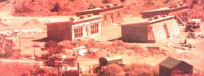

GREENHOUSE UNIT: Warm air from the attached greenhouse rises into the room while cold room air sinks into the greenhouse to be heated. Warmth is stored overnight in the walls and floor of the room . . . which can be closed off from the greenhouse at any time to prevent unwanted heat loss or gain. Note that the greenhouse is dug 2-1/2 feet into the ground to protect it from frost. This design extends the northern New Mexico growing season from 4 to 10 months.